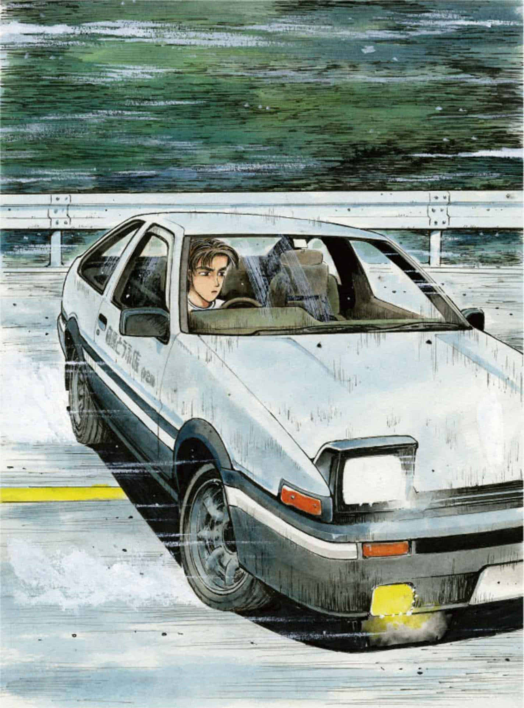
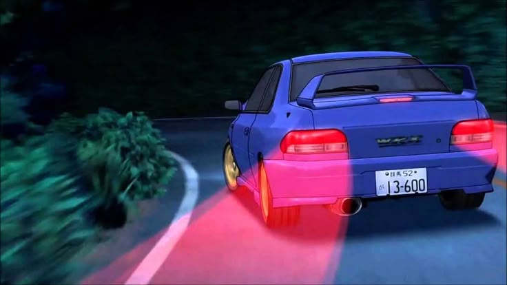

Initial D: Vehicles
Toyota Sprinter Trueno GT-APEX (AE86)
Takumi Fujiwara
Lightweight, agile RWD icon. Takumi's weapon of choice, initially stock, later tuned with a high-revving engine. Panda paint job and pop-up headlights are its trademarks.
Subaru Impreza WRX STi Type R (GC8)
Bunta Fujiwara
A powerful and technologically advanced AWD machine, reflecting his legendary driving prowess and providing a stark contrast to Takumi's older AE86. Its presence signifies Bunta's continued involvement and subtle guidance in Takumi's racing journey.